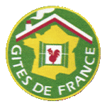

Avec le printemps, nombre de métropolitains commencent à préparer leurs vacances. J’ai parlé à plusieurs reprises [1] [2] des compagnies aériennes qui peuvent emmener les vacanciers sur l’île mais moins souvent de l’hébergement. C’est pourtant tout aussi crucial de savoir où dormir une fois là-bas. Ma page hébergement de tourisme sur DMOZ (aujourd’hui disparue) qui listait quelques locations de meublés à la Réunion s’est aujourd’hui étoffée avec la présence de quelques hôtels et gîtes qui proposent de se présenter sur le web. Mais j’aimerais plutôt vous orienter vers une offre d’hébergement originale qu’on appelle le tourisme vert.
Avec le printemps, nombre de métropolitains commencent à préparer leurs vacances. J’ai parlé à plusieurs reprises [1] [2] des compagnies aériennes qui peuvent emmener les vacanciers sur l’île mais moins souvent de l’hébergement. C’est pourtant tout aussi crucial de savoir où dormir une fois là-bas. Ma page hébergement de tourisme sur DMOZ (aujourd’hui disparue) qui listait quelques locations de meublés à la Réunion s’est aujourd’hui étoffée avec la présence de quelques hôtels et gîtes qui proposent de se présenter sur le web. Mais j’aimerais plutôt vous orienter vers une offre d’hébergement originale qu’on appelle le tourisme vert.
Les chambres d’agriculture de France font la promotion d’agriculteurs qui ouvrent leur ferme au public pour un hébergement de vacances résolument champêtres. Cette promotion s’appelle bienvenue à la ferme (archive du site réunionnais) et le site web du même nom propose de nombreuses offres dans toute la France. À la Réunion, les fermes-auberges sont au nombre de 14 et l’offre est complétée par la ferme équestre de Rico Nourry à Saint Benoit et le camping à la ferme de Rose-Marie Techer à Hell Bourg dans le cirque de Salazie. Le site mis en place par les chambres d’agriculture est très riche et intéressant pour qui veut prendre le temps de s’y attarder ; les cartes sont claires et très bien travaillées. Mais comme il est très lourd et que les recherches ne peuvent
pas être sauvegardées, je vous propose ici un miroir du résultat de
recherche pour l’île de la Réunion.

La page «Réunion» du site national des Gîtes de France est bien plus légère et pérenne et je ne peux donc pas éviter de vous la présenter. Pour que votre recherche de gîte à la Réunion soit complète, il ne me reste plus qu’à vous présenter le site de la Maison de la Montagne et sa page des refuges, très utile pour préparer de grandes randonnées dans les hauts.
Ce site de la Maison de la Montagne est d’ailleurs riche d’informations
qu’on ne trouve pas ailleurs comme les pistes de VTT ou les randonnées équestres. Le tout avec les conditions et tarifs à jour.
Si avec ça, vous ne trouvez pas d’hébergement original pour votre prochain séjour à la Réunion, vous pensez m’arrêter là ? Mais je n’ai pas dit mon dernier mot. Allez donc butiner du coté du répertoire DMOZ voyez les hôtels, les locations saisonnières et même les agences immobilières. Vous y trouverez sûrement un endroit ou dormir. Après avoir visité l’ensemble des sites proposés, il est vraisemblable que vous acceptiez de dormir n’importe où, tellement vous serez fatigués.
Les listes d’hébergement ci-dessus n’ont pas survécu à la vague des grands sites de réservation internationaux. D’ailleurs je ne m’occupe plus de la page DMOZ puisque ce dernier site a disparu et il semblerait que le site de la maison de la montagne et de la mer ne soit plus en ligne. Seuls restent les hébergements spécifiques à la ferme et en gîte qui sont le cœur de cet article. Ils existaient avant le web et continuent de proposer leur offre originale en ligne.